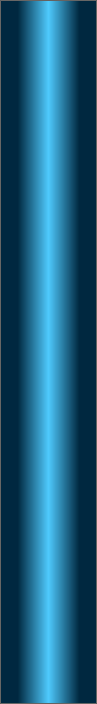

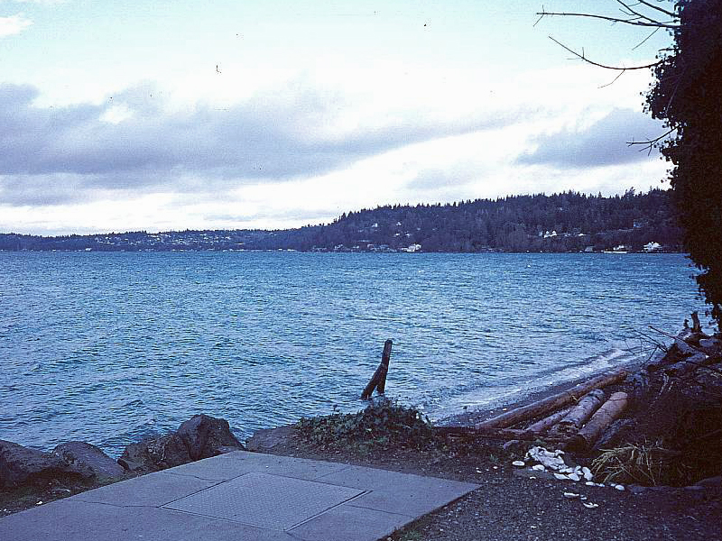
Three Tree Point
Topography: Moderately sloping bottom comprised of sand and cobblestone. Locals have “dumped” a variety of appliances, boats, tires, and other debris to create a series of small artificial reefs.
Puget Sound marine life rating: 3 (during night dives)
Puget Sound structure rating: 2
Diving depth: 60-95 feet.
Highlight: Easy access night dive location. High diversity of small creatures at night and the remote chance of seeing six gill shark. High number of red octopus and sailfin sculpins.
Skill level: Novice
GPS coordinates: N47° 27.130’ W122° 22.755’ (shore access)
Access by boat: Three Tree Point is situated south of Seattle and west of Burien. This dive site is on the north side of Three Tree Point. The majority of the artificial structure runs several hundred yards northeast of the public beach, although some structure also reside to the southwest. The public beach access is distinguished by a large rock retaining wall and two lone pilings - one of which looks like it is falling over.
Shore access: There are several ways to get to this dive site. Here is how I get to the public beach access:
From I-5 or I-405, follow highway 518 to the west. Go past the north end of the SeaTac Airport runway and to the traffic lights at the freeway’s end.
Continue straight through the lights onto 148th.
Follow 148th through several lights to Ambaum Blvd. Turn left at the light on Ambaum Blvd. (now heading south) for a few blocks.
Turn right at the light on 152nd (now heading west).
Follow 152nd for about 0.8 miles. Just past 21st, the road will veer to the left and turn into Maplewild.
Follow Maplewild for about 1.6 miles. The road name will change at one point, but will continue on as Maplewild a little further down. Maplewild is a narrow and curvy road that is accessed by many private driveways, so drive very carefully.
Turn right onto170th as you descend a large hill and approach the water. If you go around the point, you have missed the turn-off.
Go straight on 170th for a very short distance until you see the public beach access in front of you. The access is simply a gated dirt path. The path leads down to a concrete bulkhead above the beach. A small parking area is in the middle of a well established residential area.
Please note: There is only parking for about 4 or 5 cars at this dive site. During fishing season, parking can be near impossible to find due to all the shore fishermen.
Dive profile: I only shore dive this site. It is my favorite night dive location because of the easy access, close proximity to my home, insensitivity to current, and the seeming endless variety of creatures I find here.
The dive site is situated on a moderately sloping substrate. The substrate’s composition varies, but starts with sand and gravel shallows. The sand and gravel give way to cobblestone at about 30 feet. The cobblestone yields back to sand in 80-90 feet of water. The shallow and middle depths nurture robust fields of broadleaf kelp during summer and fall months. The shallows use to harbor an extensive eelgrass bed, however that bed has been almost totally wiped out in recent years.
The natural topography is relatively featureless. Locals have spiced up the topography by depositing a multitude of artificial structures throughout this area. I am not certain if they were avoiding the dump or if they were really trying to create fish habitat. I expect it is the latter as most of the reef structure has been stripped of anything considered an environmental hazard.
The artificial reef would make any junkyard owner proud. Cruising over the cobblestone bottom I run into tire piles, mounds of concrete sewer pipes, PVC pipe formations, a multitude of bathroom fixtures, lawn furniture, a huge satellite dish (someone in the area upgraded to Direct TV), a sunken 24’ pleasure boat, old appliances, a canoe broken in two, and my favorite attraction, a small runabout style boat on a trailer (engine not included). Someone has recently taken upon themselves to dislodge the boat from the trailer. I may have to mount an expedition to resurrect this underwater monument.
The majority of the artificial reef structure is located in 40 to 80 feet of water to the right of the public beach access. The amount of artificial reef structure intensifies for several hundred yards before abruptly stopping. Attractions to the left of the public beach access are sparse but include several tire piles and a Fiberform pleasure boat resting in about 70 feet of water.
My preferred gas mix: EAN 34
Current observations: A mild current often sweeps over this site to the southwest. I have only encountered a strong and unmanageable current on one of the +200 dives I have done here. The strong current was limited to the shallows and commenced at the beginning of a flooding tide on an abnormally large exchange. I sometimes note a mild downslope current as I approach the shallows from deeper waters.
The current typically (but not always) runs southwest towards the point, regardless if the tide is ebbing or flooding. Ebbing current in Puget Sound flows north and back-eddies off the point. The current is more noticeable in the shallows and usually very weak to unnoticeable at deeper depths.
I use the current to my advantage by starting my dive to the right of the public access and heading northeast parallel to shore. I continue northeast during the deepest part of my dive where the current is less of a factor. I use the southwest bound current to drift back to the public access in the shallows on my return trip. This plan doesn’t always work, but makes for an easy dive when the current acts as predicted.
Park facilities: The beach access at Three Tree Point simply consists of limited parking for about 6 cars, a garbage can, a dirt path to the beach, and an elevated concrete platform above the beach.
Be careful of all the "no parking" signs on some of the side streets. The public beach access is only open from dawn to dusk, which technically means no night diving. This ordinance is clearly posted on a sign by the gate and promises imprisonment and/or a fine to violators. I presume the ordinance is in place to keep rowdy partiers off the beach at night. I have been doing night dives here for years and never been hassled. I make a point of being quiet when I get out of the water at night and being friendly with the locals. No loud conversations, no blowing out dust caps, and no banging gear around. It is a privilege to get to dive this location by shore, not a right.
Boat Launch:
· Redondo Beach boat ramp (Redondo). Approximately 6 miles from the dive site. Note that launching or recovering a boat at this
ramp during a strong north wind is difficult at best when docks are pulled from this ramp in winter months.
· Don Armini boat ramp (West Seattle). Approximately 12 miles from the dive site.
Facilities: None
Hazards:
· Fishing boats: Salmon fishermen frequently troll along this shoreline during summer months.
· Snagging hazards: Some of the artificial structures pose snagging hazards.
· Current: Light to moderate current flows along the point. Heavy current possible during very large exchanges.
Marine life: I almost exclusively dive this site at dusk or night. This site strikes me as somewhat bland during the day. At night it takes on a completely different persona as interesting creatures emerge from the artificial reef.
This is a great place to find small red octopus at night. I usually spot several of these cunning hunters each dive. The giant Pacific octopus also makes an appearance now and then.
I find sailfin, grunt, great, Pacific staghorn, and roughback sculpins regularly at this site. Pacific spiny lumpsuckers move into the shallows during late fall and early winter to occupy growths of broadleaf kelp. I have found as many as 11 lumpsuckers on a single dive, ranging from dime to quarter size.
Winter months offer chance encounters with stubby and opalescent squid. The opalescent squid is attracted to bright dive lights and lay large communal egg clusters that measure over three feet long.
Skates also frequent this site, although I usually find big and long nose skates below 80 feet on the soft substrate.
Discarded glass bottles and jars litter the deeper regions of this dive site and provide excellent dens and amazing photo opportunities for gunnels, red octopus, and grunt sculpins.
The big draw during the summer is the remote chance of diving with six gill sharks. I have several sightings to date, from as shallow as 33 feet to as deep as 115 feet. Not much is known about these deepwater sharks, but they occasionally come up from the depths at night to hunt. I have seen six gill sharks at Three Tree Point from June through October.
A pair of black rockfish took up residence by the small boat on the trailer a few years back, but eventually disappeared. A school of juvenile black rockfish has recently moved into the neighborhood. My hope is that spear fishermen will leave them alone and give this species a chance to at least partially recover in Puget Sound.
Lone or paired wolfeels establish dens along the artificial reef from time to time. A mated pair currently lives under an old engine block in 60 feet of water at the far southeast end of the reef.
There is an inordinate amount of marine life at this site, but much of it is very subtle. I am always amazed what I find here as each dive brings a new surprise.
Puget Sound marine life rating: 3 (during night dives)
Puget Sound structure rating: 2
Diving depth: 60-95 feet.
Highlight: Easy access night dive location. High diversity of small creatures at night and the remote chance of seeing six gill shark. High number of red octopus and sailfin sculpins.
Skill level: Novice
GPS coordinates: N47° 27.130’ W122° 22.755’ (shore access)
Access by boat: Three Tree Point is situated south of Seattle and west of Burien. This dive site is on the north side of Three Tree Point. The majority of the artificial structure runs several hundred yards northeast of the public beach, although some structure also reside to the southwest. The public beach access is distinguished by a large rock retaining wall and two lone pilings - one of which looks like it is falling over.
Shore access: There are several ways to get to this dive site. Here is how I get to the public beach access:
From I-5 or I-405, follow highway 518 to the west. Go past the north end of the SeaTac Airport runway and to the traffic lights at the freeway’s end.
Continue straight through the lights onto 148th.
Follow 148th through several lights to Ambaum Blvd. Turn left at the light on Ambaum Blvd. (now heading south) for a few blocks.
Turn right at the light on 152nd (now heading west).
Follow 152nd for about 0.8 miles. Just past 21st, the road will veer to the left and turn into Maplewild.
Follow Maplewild for about 1.6 miles. The road name will change at one point, but will continue on as Maplewild a little further down. Maplewild is a narrow and curvy road that is accessed by many private driveways, so drive very carefully.
Turn right onto170th as you descend a large hill and approach the water. If you go around the point, you have missed the turn-off.
Go straight on 170th for a very short distance until you see the public beach access in front of you. The access is simply a gated dirt path. The path leads down to a concrete bulkhead above the beach. A small parking area is in the middle of a well established residential area.
Please note: There is only parking for about 4 or 5 cars at this dive site. During fishing season, parking can be near impossible to find due to all the shore fishermen.
Dive profile: I only shore dive this site. It is my favorite night dive location because of the easy access, close proximity to my home, insensitivity to current, and the seeming endless variety of creatures I find here.
The dive site is situated on a moderately sloping substrate. The substrate’s composition varies, but starts with sand and gravel shallows. The sand and gravel give way to cobblestone at about 30 feet. The cobblestone yields back to sand in 80-90 feet of water. The shallow and middle depths nurture robust fields of broadleaf kelp during summer and fall months. The shallows use to harbor an extensive eelgrass bed, however that bed has been almost totally wiped out in recent years.
The natural topography is relatively featureless. Locals have spiced up the topography by depositing a multitude of artificial structures throughout this area. I am not certain if they were avoiding the dump or if they were really trying to create fish habitat. I expect it is the latter as most of the reef structure has been stripped of anything considered an environmental hazard.
The artificial reef would make any junkyard owner proud. Cruising over the cobblestone bottom I run into tire piles, mounds of concrete sewer pipes, PVC pipe formations, a multitude of bathroom fixtures, lawn furniture, a huge satellite dish (someone in the area upgraded to Direct TV), a sunken 24’ pleasure boat, old appliances, a canoe broken in two, and my favorite attraction, a small runabout style boat on a trailer (engine not included). Someone has recently taken upon themselves to dislodge the boat from the trailer. I may have to mount an expedition to resurrect this underwater monument.
The majority of the artificial reef structure is located in 40 to 80 feet of water to the right of the public beach access. The amount of artificial reef structure intensifies for several hundred yards before abruptly stopping. Attractions to the left of the public beach access are sparse but include several tire piles and a Fiberform pleasure boat resting in about 70 feet of water.
My preferred gas mix: EAN 34
Current observations: A mild current often sweeps over this site to the southwest. I have only encountered a strong and unmanageable current on one of the +200 dives I have done here. The strong current was limited to the shallows and commenced at the beginning of a flooding tide on an abnormally large exchange. I sometimes note a mild downslope current as I approach the shallows from deeper waters.
The current typically (but not always) runs southwest towards the point, regardless if the tide is ebbing or flooding. Ebbing current in Puget Sound flows north and back-eddies off the point. The current is more noticeable in the shallows and usually very weak to unnoticeable at deeper depths.
I use the current to my advantage by starting my dive to the right of the public access and heading northeast parallel to shore. I continue northeast during the deepest part of my dive where the current is less of a factor. I use the southwest bound current to drift back to the public access in the shallows on my return trip. This plan doesn’t always work, but makes for an easy dive when the current acts as predicted.
Park facilities: The beach access at Three Tree Point simply consists of limited parking for about 6 cars, a garbage can, a dirt path to the beach, and an elevated concrete platform above the beach.
Be careful of all the "no parking" signs on some of the side streets. The public beach access is only open from dawn to dusk, which technically means no night diving. This ordinance is clearly posted on a sign by the gate and promises imprisonment and/or a fine to violators. I presume the ordinance is in place to keep rowdy partiers off the beach at night. I have been doing night dives here for years and never been hassled. I make a point of being quiet when I get out of the water at night and being friendly with the locals. No loud conversations, no blowing out dust caps, and no banging gear around. It is a privilege to get to dive this location by shore, not a right.
Boat Launch:
· Redondo Beach boat ramp (Redondo). Approximately 6 miles from the dive site. Note that launching or recovering a boat at this
ramp during a strong north wind is difficult at best when docks are pulled from this ramp in winter months.
· Don Armini boat ramp (West Seattle). Approximately 12 miles from the dive site.
Facilities: None
Hazards:
· Fishing boats: Salmon fishermen frequently troll along this shoreline during summer months.
· Snagging hazards: Some of the artificial structures pose snagging hazards.
· Current: Light to moderate current flows along the point. Heavy current possible during very large exchanges.
Marine life: I almost exclusively dive this site at dusk or night. This site strikes me as somewhat bland during the day. At night it takes on a completely different persona as interesting creatures emerge from the artificial reef.
This is a great place to find small red octopus at night. I usually spot several of these cunning hunters each dive. The giant Pacific octopus also makes an appearance now and then.
I find sailfin, grunt, great, Pacific staghorn, and roughback sculpins regularly at this site. Pacific spiny lumpsuckers move into the shallows during late fall and early winter to occupy growths of broadleaf kelp. I have found as many as 11 lumpsuckers on a single dive, ranging from dime to quarter size.
Winter months offer chance encounters with stubby and opalescent squid. The opalescent squid is attracted to bright dive lights and lay large communal egg clusters that measure over three feet long.
Skates also frequent this site, although I usually find big and long nose skates below 80 feet on the soft substrate.
Discarded glass bottles and jars litter the deeper regions of this dive site and provide excellent dens and amazing photo opportunities for gunnels, red octopus, and grunt sculpins.
The big draw during the summer is the remote chance of diving with six gill sharks. I have several sightings to date, from as shallow as 33 feet to as deep as 115 feet. Not much is known about these deepwater sharks, but they occasionally come up from the depths at night to hunt. I have seen six gill sharks at Three Tree Point from June through October.
A pair of black rockfish took up residence by the small boat on the trailer a few years back, but eventually disappeared. A school of juvenile black rockfish has recently moved into the neighborhood. My hope is that spear fishermen will leave them alone and give this species a chance to at least partially recover in Puget Sound.
Lone or paired wolfeels establish dens along the artificial reef from time to time. A mated pair currently lives under an old engine block in 60 feet of water at the far southeast end of the reef.
There is an inordinate amount of marine life at this site, but much of it is very subtle. I am always amazed what I find here as each dive brings a new surprise.
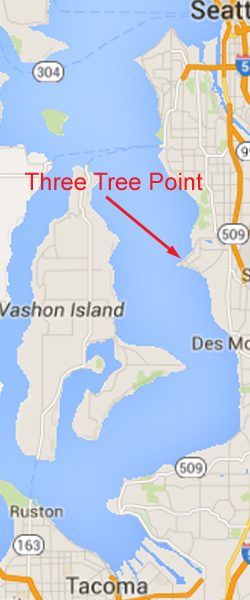
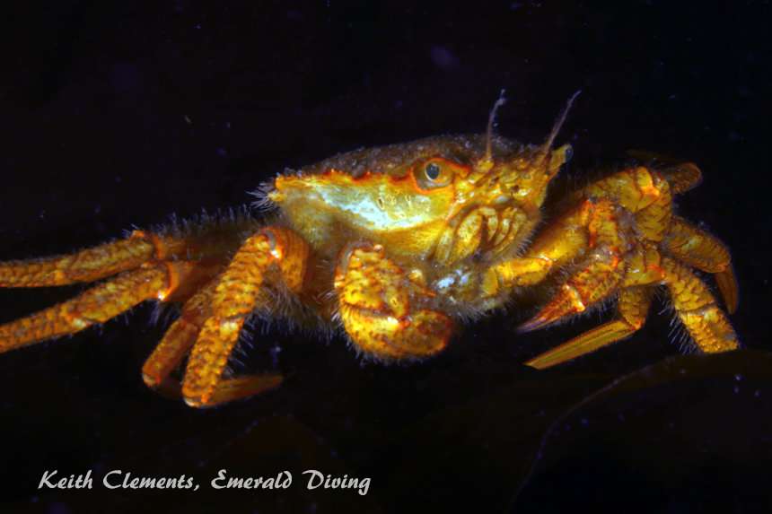
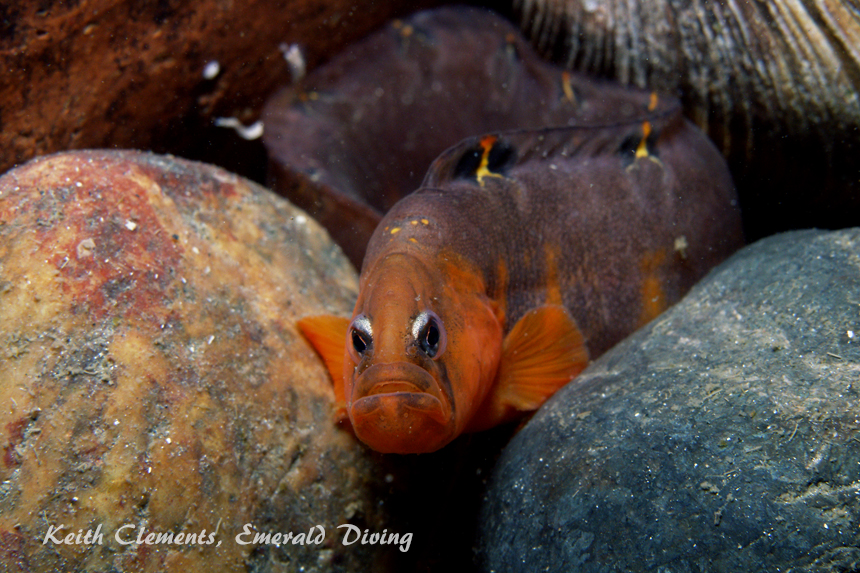
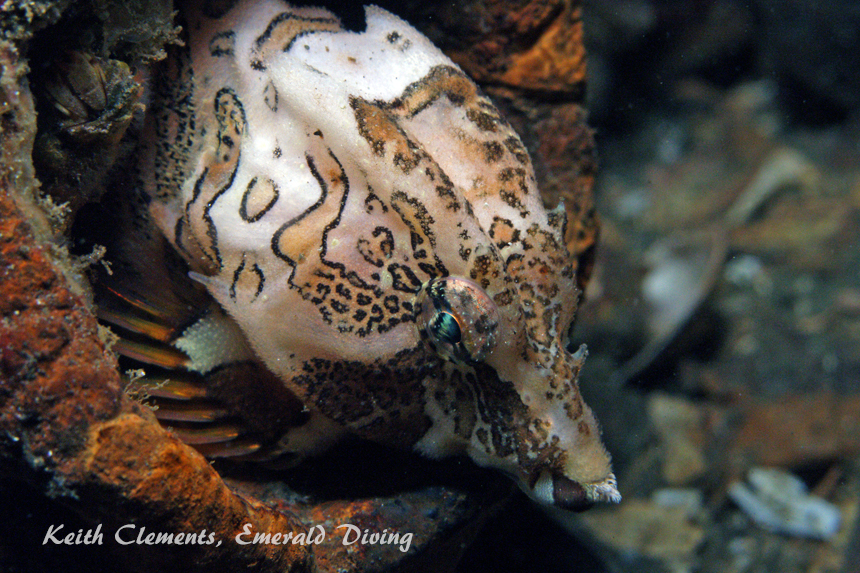
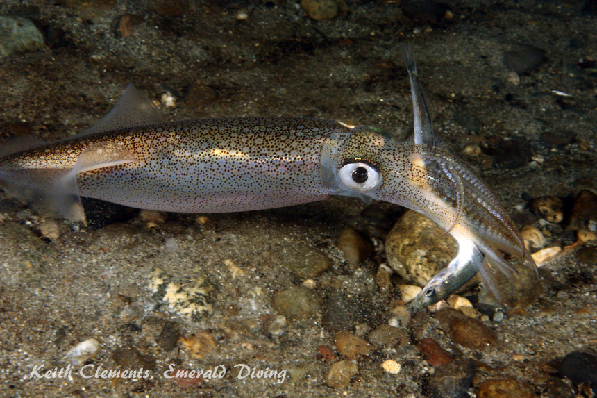
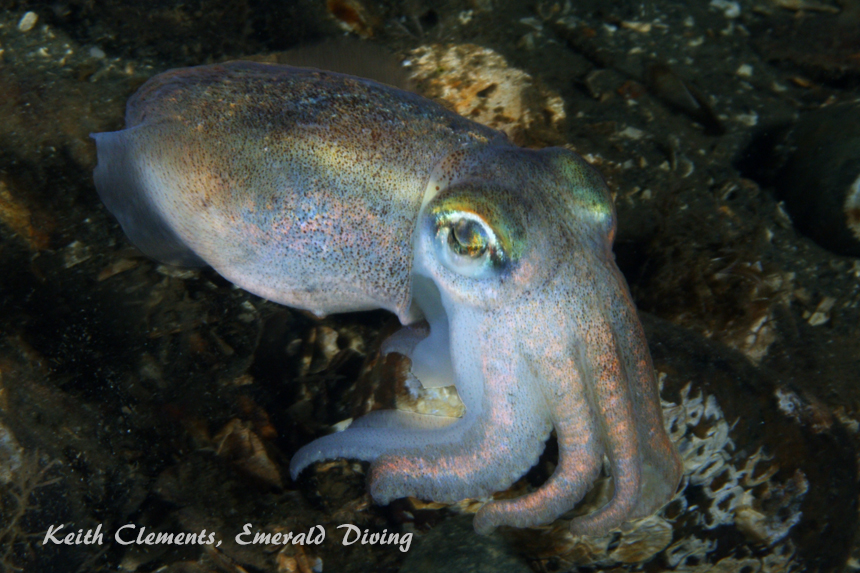
Helmet Crab
Crescent Gunnel
Grunt Sculpin
Opalescent Squid
Underwater imagery from this site

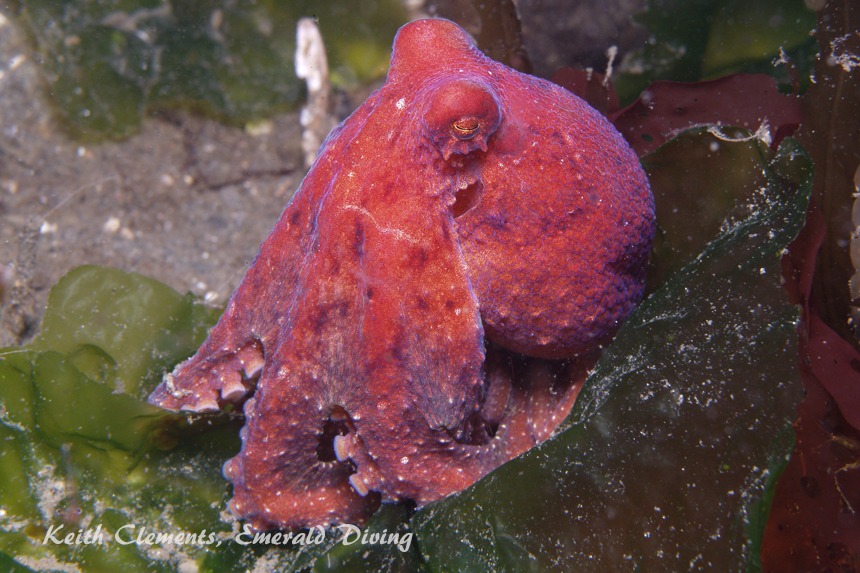
Stubby Squid
Pacific Spiny Lumpsucker

Red Octopus
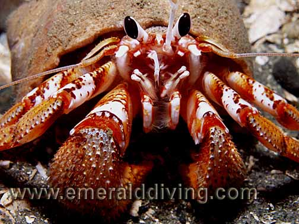
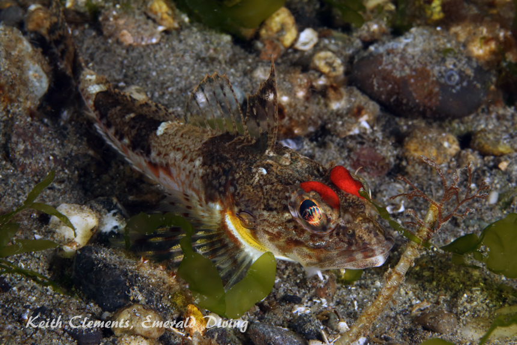
White-Lined Dirona
Blackeye Hermit
Roughback Sculpin
Composite Photography From Three Tree Point
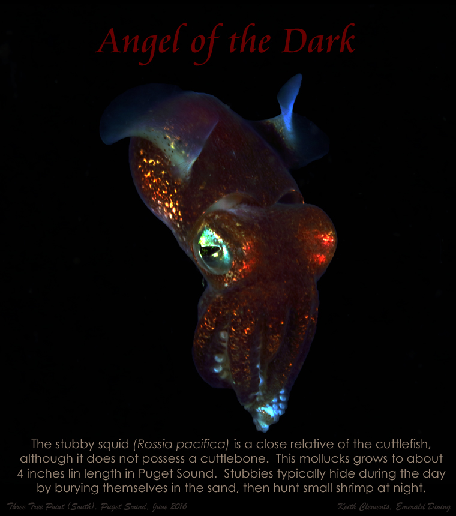